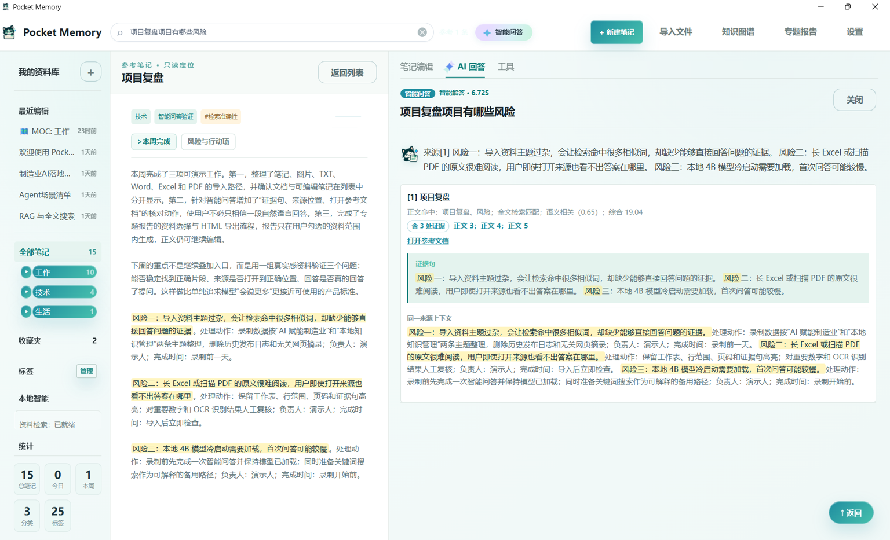

随手记下，也能长期管理
用可编辑、多页签的笔记承接灵感、会议、项目过程和个人资料。分区、收藏、置顶、标签和历史版本让内容不会只停留在“写过”。
LOCAL-FIRST KNOWLEDGE WORKBENCH
Pocket Memory 把笔记、图片和工作文档沉淀为一个本地知识库。笔记和附件默认不上传云端，本地 Qwen 模型在你的电脑上完成智能问答与整理；每一次回答都尽量带你回到支撑结论的原文。
WHY POCKET MEMORY
日常工作里，真正消耗时间的往往不是没有资料，而是资料散落、记忆模糊、无法确认它从哪里来。Pocket Memory 将“记录、找到、核对、输出”串成一条可持续使用的路径。
用可编辑、多页签的笔记承接灵感、会议、项目过程和个人资料。分区、收藏、置顶、标签和历史版本让内容不会只停留在“写过”。
TXT、Word、Excel、PDF 与图片可进入同一资料库。导入后保留原件和位置线索，让搜索不仅找得到标题，也能指向内容所在的片段。
智能问答不是把相似文字重新说一遍。回答区同时展示证据句、来源和打开原文入口，让用户可以自己判断结论是否站得住。
PRODUCT WALKTHROUGH
演示展示多页签笔记、常用文档导入、本地智能问答与来源核对，以及从选定资料生成专题报告的完整工作流程。
CORE CAPABILITIES
下面按真实使用顺序展开。它既适合个人的长期积累，也适合项目资料、学习材料、会议纪要和工作文档的本地管理。
同一个主题可拆成多个页签，例如“背景、方案、风险、行动项”。支持富文本、表格、图片、链接、颜色、历史版本，以及分区、收藏与置顶，既适合快速记录，也能承载长期维护。
怎么用：点击 新建笔记 后直接在右侧工作区写作；需要展开同一主题时，用 新增页签 管理，不必把所有内容塞进一篇超长正文。
导入 TXT、DOCX、XLSX、PDF 和图片后，系统保留原始附件，并按标题、段落、页码、工作表和表格行等结构建立可定位内容。图片与扫描件可使用本地 OCR 提取文字，原件、切片与检索位置可以分别查看。
怎么用：在 导入文件 中选择多个文件或一个文件夹；文档默认在“文档”视图集中查看，可重建索引、替换原件、下载原件，或从智能问答直接打开命中的位置。
在笔记中通过链接引用另一篇笔记，阅读时可点击跳转到目标内容。系统同时保留反向关系，因此一篇项目笔记被哪些专题、复盘或行动项引用，不必靠人工回忆。
怎么用：在正文中插入并选择目标笔记；阅读引用时点击链接进入 只读参考笔记，核对后可返回原笔记继续编辑，避免误改来源内容。
知识图谱以笔记间的双链和共用标签为线索展示关联，也能显示孤立笔记。它适合发现某个项目、主题或标签周边已经积累了什么，以及哪些资料还没有被纳入任何脉络。
怎么用：打开 知识图谱，按标题或标签筛选；勾选“显示孤立笔记”检查未关联内容。图谱用于浏览与整理，不参与智能问答的默认证据库。
系统可根据笔记内容给出分类与标签建议，但标签数量受控，支持删除与合并建议。分类路径、手工移动、排序、收藏和置顶共同解决“资料越来越多以后找不到”的问题。
怎么用：先用分区表达稳定结构，用收藏表达高频资料；对 AI 建议的标签保持审阅，不需要的标签可以直接删掉，不让标签无上限增长。

一个界面完成资料浏览、笔记编辑、智能问答和证据核对；左右分栏可根据使用习惯调整宽度。
TRACEABLE LOCAL RAG
Pocket Memory 的智能回答先在用户自己的笔记和文件中检索证据，再用本地模型组织结论。它不是另一份“自动记忆库”，而是回到你自己资料的入口。
笔记页签、导入文件、图片 OCR 同时保存原文、类型与定位信息。
区分时间、数量、列表、解释和短追问；完整新问题不会被旧话题牵偏。
全文检索擅长术语、编号、金额和日期；BGE 向量检索补充同义表达。
对候选切片按问题匹配度与结构重排，减少只有相似词却答非所问的情况。
回答返回证据句、来源和打开参考文档入口；资料不足时应明确提示。

TOPIC REPORT
专题报告不替用户做全库总结，也不把模型产物伪装成永久知识。它只围绕用户明确选中的资料，帮助形成有结构的 HTML 初稿，之后仍可继续编辑和核对。
直接在平时使用的笔记、文档列表中多选 1 至 8 项相关资料，不需要进入单独且难操作的选择页。
填写标题，选择适合的报告结构。系统在已选范围内提取可回看的内容，而不是擅自扩展到整库。
在独立预览中检查、补写和调整表达后导出。报告应被看作效率工具，而不是未经审查的最终结论。
LOCAL ARCHITECTURE & EXTENSIBILITY
Pocket Memory 将笔记、附件、SQLite 数据、全文索引、BGE 中文向量检索、RapidOCR 与本地 Qwen 推理组合在 Windows 桌面环境中。每一层都有清晰职责，因此可以在不推倒现有笔记体验的前提下继续增强导入、检索、评测与专题输出能力。
POCKET MEMORY BETA
记录它、整理它、问它、核对它。Pocket Memory 希望让每一份属于你的资料，在真正需要的时候再次发挥作用。
完整包内含本地智能模型与检索组件。